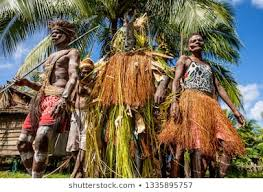

Cultural anthropology is a branch of anthropology foused on the study of cultural
variation among humans. It is in contrast to social anthropology, which
cultural variation as a subset of a posited anthropological constant. The umbrella
term sociocultural anthropology includes both cultural and social anthropology traditions.[1]
Edward Burnett Tylor
Anthropologists have pointed out that through culture people can adapt to their environment
in non-genetic ways, so people living in different environments will often have different cultures.
Much of anthropological theory has originated in an appreciation of and interest in the tension
between the local (particular cultures) and the global (a universal human nature, or the web of
connections between people in distinct places/circumstances).[2]
Cultural anthropology has a rich methodology, including participant observation
(often called fieldwork because it requires the anthropologist spending an extended
period of time at the research location), interviews, and surveys.[3]
